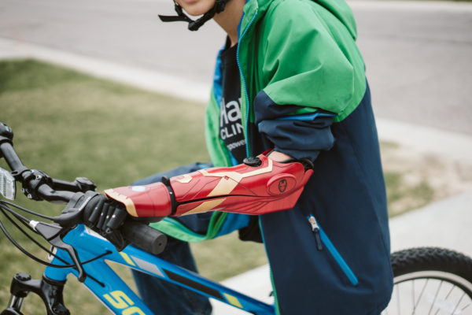
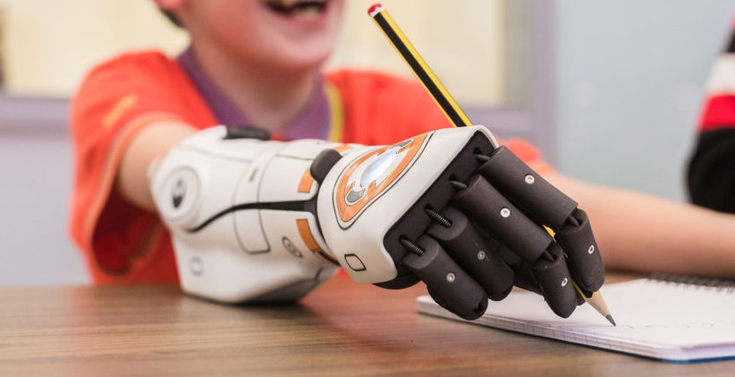
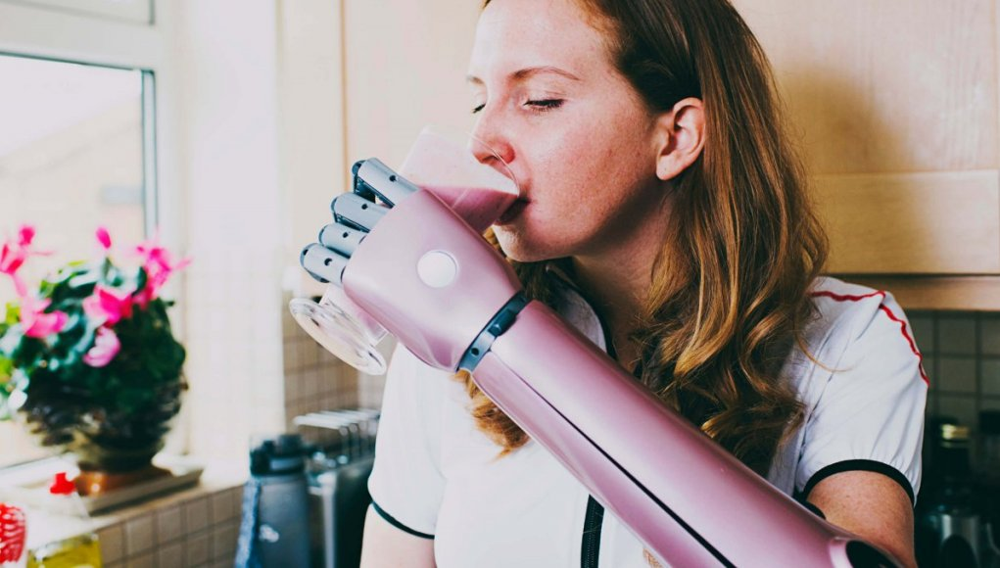

ULTRA BIONIC ARM
Introducing the Arm Features



ULTRA BIONIC ARM
Introducing the Arm Features
Meet the Hero Arm, the world's first medically certified 3D-printed bionic arm,
with multi-grip functionality and empowering aesthetics.
Engineered and manufactured in Bristol, UK, the Hero Arm is a lightweight and affordable myoelectric prosthesis,
available now in the USA, UK and France for below elbow amputee adults and children aged eight and above.
Welcome to the future, where disabilities are superpowers.
Get A Bionic Arm
Each Hero Arm is custom-built using 3D printing and 3D scanning technologies.
The prosthesis is robust, and the socket is comfortable, adjustable and breathable too,
which means it’s easy to take on and off while providing you with the best possible fit.
Get A Bionic Arm
With the Hero Arm, technology is at your fingertips. Literally.
Special sensors within the Hero Arm detect muscle movements,
meaning you can effortlessly control your bionic hand with intuitive life-like precision.
Also, haptic vibrations, beepers, buttons and lights provide you with intuitive notifications.
Get A Bionic Arm
Even though the Hero Arm is powered by space grade motors, advanced software and long-lasting batteries,
it is lightweight and super sleek. The hand, which comes in three sizes, is the lightest on the market.
The Hero Arm feels like part of you. And it’s strong too, able to lift up to 8 kg (17.64 lbs).
Get A Bionic Arm
The Hero Arm is whatever you want it to be.
With swappable covers, you can switch up your style to match your mood.
The Hero Arm comes with one set of free covers, and you can choose from a wide range
including Star Wars BB-8, Marvel Iron Man, Disney Frozen and Deus Ex
Get A Bionic Arm
Get A Bionic Arm
The Bionic Arm is now available through prosthetic clinics
in the UK, USA, and Europe. If you're a below-elbow amputee and interested
in getting a Bionic Arm, register your interest and we'll reach out to you
with information about your nearest prosthetics clinic.
Your bionic journey begins here.
Get A Bionic Arm